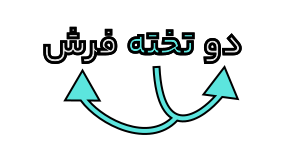
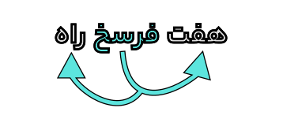
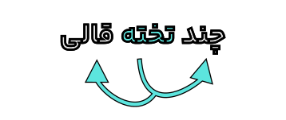
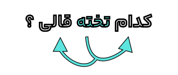
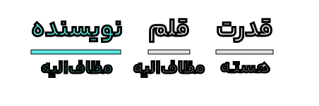
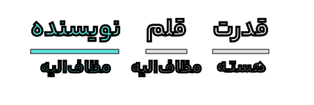

درس هشتم: از پاریز تا پاریس
پاریز کلاس ششم ابتدایی نداشت. ناچار میبایست ده فرسخ راه را پیموده به سیرجان بروم. عصر از پاریز با «الاغتور» راه میافتادیم؛ سه فرسخ کوهستانی آب و آبادی داشت، امّا از «کرّان» به بعد هفت فرسنگ، تمام بیابان ریگزار بود. آب از این ده برمیداشتیم و صبح، هنگام «چریغ آفتاب» کنار «قنات حسنی» در شهر سیرجان اتراق میکردیم. نخستین سفر من، شهریور ماه ۱۳۱۶ شمسی برای کلاس ششم دبستان چنین انجام گرفت. ده فرسنگ راه را دوازده ساعته میرفتیم.
از کلاس سوم دبیرستان ناچار میبایست به کرمان برویم؛ بنابراین بعد از دو سه سال ترک تحصیل که دوباره وسایل فراهم شد، سیوپنج فرسنگ راه بین سیرجان و کرمان را دوشنبه با کامیون طی کردیم. دو سال دانشسرای مقدّماتی طی شد. ادامهٔ تحصیل در تهران پیش آمد. این همان سفری است که هنگام مراجعه به بانک اعتبارات ایران برای من تداعی شد؛ زیرا آن روز سیصد تومان پول مجموعاً تهیه کرده بودم که به تهران بیایم و این، مخارجِ قریب شش ماه من بود.
وقتی از پاریز به رفسنجان آمدم، به من سفارش شد که بردن سیصد تومان پول تا تهران همراه یک محصّل، خطرناک است! ناچار باید از یک تجارتخانهٔ معتبر به تهران حواله گرفت. به سفارش این و آن به تجارتخانهٔ «امین» مراجعه کردم. اتاقی بود با یک میز و دو صندلی؛ پیرمرد لاغر ـ که بعداً فهمیدم امین، صاحب تجارتخانه است ـ پشت میز نشسته بود. هیچ باور نداشتم اینجا یک تجارتخانه باشد. گفتم: «حوالهٔ سیصد تومان برای تهران لازم دارم.» او گفت: «بده؛ پول را بده.»
خجالت دهاتی مانع شد بگویم شما که هستید؟ بیاختیار سیصد تومان را دادم. پیرمرد از داخل کازیۀ روی میز یک پاکت کهنه را که از جایی برایش رسیده بود، برداشت. کاغذ مثلث روی پاکت را که برای چسباندن در پاکت به کار میرود، پاره کرد. روی آن حوالهٔ سیصد تومان به تهران نوشت و امضایی کرد و به من داد. امضای امین داشت، امّا نه نشانهٔ تجارتخانه داشت، نه کاغذ بزرگ بود، نه ماشین تحریر و نه ماشیننویس و نه ثبت و نمره؛ هیچ و هیچ…
نخستین روزی که از پاریز خارج شدم (۱۳۱۶) سیرجان را آخر دنیا حساب میکردم و امسال (۱۳۴۹) که به اروپا رفتم، گمانم این است که عالمی را دیدهام. امّا چه استبعادی دارد که عمری باشد و روزی خاطراتی از سفر ماه هم بنویسم! آرزوها پایان ندارد. آدمی به هرجا میرود، گمان میکند به غایتالقصوای مقصود خود رسیده است؛ در صورتی که دنیا بیپایان است.
عبور هواپیما از روی دریای مدیترانه همیشه آدمی را غرق دریای تصوّرات تاریخی میکند. البته توقّف ما در امّان و آتن بیش از نیم ساعت طول نکشید و به قول بیرجندیها، در این دو شهر تنها یک «سرپری» زدیم. از امّان به بعد، تغییر زمین آشکار شد. سواحل شرقی مدیترانه از زیباترین نواحی عالم است. بیشتر راه را از روی دریا گذشتیم. جزیرههای کوچک و بزرگ، مثل وصلههای رنگارنگ بر طیلسان آبی مدیترانه دوخته شده است.
فرودگاه آتن، نوساز و مربوط به دوران حکومت سرهنگهاست و مثل اینکه مردم هم از این حکومت چیزهای چشمگیری دیدهاند. شوخی روزگار است که مهد دموکراسی عالم، یعنی آتن، که دو هزار و هشتصد سال قبل حتّی برای آب خوردن در شهر هم، مردم رأی میگرفتند و رأی میدادند، از بیم عقرب جرّارهٔ دموکراسی قرن بیستم، ناچار شده به مار غاشیهٔ حکومت سرهنگها پناه ببرد.
رُم، پایتخت ایتالیا، شهری است قدیمی. دیوارهای قطور و باروهای دودخوردهٔ آن به زبان حال بازگو میکند که روزگاری از فراز همین برجها، فرمان به سواحل دریای سیاه داده میشده و کرانههای فرات، خط از کرانهٔ رود تیبر میخواندند. امّا دنیا همیشه به یک رو نمیماند. آخرین چراغ امپراتوری روم را موسولینی روشن کرد که چند صباحی تا حبشه و قلب افریقا نیز پیش راند، امّا همه میدانیم که «دولت مستعجل» بود. چه خوش گفتهاند که «امپراتوریهای بزرگ هم مانند آدمهای ثروتمند، معمولاً از سوءِ هاضمه میمیرند.»
دیوارهای کهن روم که هنوز طاق ضربی دروازههای آن باقی است، حکایت از روزگاران گذشته دارد. یک روز دنیایی به روم چشم داشت و از آن چشم میزد، امّا امروز به جای همهٔ آن حرفها وقتی اعتصاب کارگران فقیر ماهیگیر و کشتیساز ایتالیا را میبینیم، باید این شعر معروف خودمان را تکرار کنیم (گویا از حاج میرزا حبیب خراسانی است):
کاووس کیانی که کی اش نام نهادند
کی بود؟ کجا بود؟ کی اش نام نهادند؟
$$***$$خاکی است که رنگین شده از خون ضعیفان
این ملک که بغداد و ری اش نام نهادند
$$***$$صد تیغ جفا بر سر و تن دید یکی چوب
تا شد تهی از خویش و نی اش نام نهادند
$$***$$دلگرمی و دمسردی ما بود که گاهی
مرداد مه و گاه دی اش نام نهادند
$$***$$آیین طریق از نفس پیر مغان یافت
آن خضر که فرخنده پی اش نام نهادند
با راهآهن به بروکسل، پایتخت بلژیک میرفتیم. در بین راه در کشور فرانسه یک ایستگاه وجود داشت که دستهگلی تازه در کنار بنایی یادبود نهاده بودند و بر بالای آن با خط درشت و بسیار روشن نوشته شده بود: «در اینجا چهل و هشت هزار نفر در برابر سپاه نازی ایستادند و همه کشته شدند.» و در آخر آن این جمله به زبان فرانسه نوشته شده بود: «این مطلب را هیچ وقت فراموش نکنید!»
من بعد از خواندن این مطلب متوجه شدم که دنیا عجیب فراموشکار است! بیست، سی سال پیش چه کارها کرده که امروز اصلاً به خاطر نمیآورد! امّا نه، تاریخ فراموشکار نیست. در کنار بروکسل، کوهها و تپههای بسیاری وجود دارد که «واترلو» خوانده میشوند. این همان جایی است که جنگ عظیم ناپلئون روی داد و سرنوشت او را تعیین کرد. یک تپهٔ یادگاری بزرگ که حدود پنجاه متر ارتفاع دارد، در آنجا برپاست که اطراف آن را چمن کاشتهاند و بر بالای آن مجسمهٔ شیری را نهادهاند.
خواهید گفت: «این تپه چگونه پیدا شده؟» زنانی که در جنگهای ناپلئونی شوهر و اقوام خود را از دست داده بودند، هر کدام، یک طبق پر از خاک کردهاند و در اینجا ریختهاند. مجموع این طبقهای خاک، این تپه را به وجود آورده است تا ما به بالای آن برویم و محوطهٔ میدان را تماشا کنیم.
علاوه بر آن، یک «پانوراما» در اینجا ساخته شده که از شاهکارهای هنری است. یک چادر بزرگ که قطر آن از پنجاه متر بیشتر است، در وسط زدهاند. بر دیوارهٔ آن از اطراف، منظرهٔ جنگ واترلو را به صورت نقاشی مجسم کردهاند. تمام میدان بهخوبی نقاشی شده؛ یک طرف سرداران ناپلئون با سپاهیان منظم، در آن گوشه توپخانه، در جای دیگر سپاهیان دشمن و بالاخره ناپلئون در آن دوردست بر اسب سفید، متفکر، به دورنمای جنگ مینگرد. چند شعاع کمنور خورشید از پس ابرها این نکته را بازگو میکند که روزی آفتابی نیست. وحشت ناپلئون از بارندگی است که توپخانهٔ او را از تحرک باز خواهد داشت.
جالب آنکه راهنمای ما میگفت: «تمام این مناظر بر اساس تعریف ویکتور هوگو از میدان جنگ ـ در جلد دوم کتاب بینوایان ـ ساخته شده؛ یعنی نقاش و طراح همان توصیفات ویکتور هوگو را نقاشی کردهاند.» من شاید حدود سیوپنج سال پیش این شرح را در پاریز خوانده بودم. حالا دوباره در ذهنم مجسم میشد.
وقتی در پاریس بودم، یک روز نامهای از پاریز به پاریس به نام من رسید. نامه را آقای هدایتزاده، معلم کلاس سوم و چهارم ابتدایی من، برایم نوشته بود؛ به یاد گذشتهها و خاطرات پاریز و خواندن بینوایان ویکتور هوگو. این معلم شریف باسواد سفارش کرده بود که اگر سر قبر ویکتور هوگو رفتم، از جانب او فاتحهای برای این نویسندهٔ بزرگ طلب کنم.
این نامه مرا به فکر انداخت. متوجه شدم که قدرت قلم این نویسنده تا چه حد بوده است که فرهنگ و تمدن فرانسوی را حتی در دل دهات دورافتادهٔ ایران مثل پاریز هم فرا برده است. کاری که نه سپاه ناپلئون میتوانست بکند و نه نیروی شارلمانی و نه سخنرانیهای دوگل.
$*$ از پاریز تا پاریس، محمد ابراهیم باستانی پاریزی
کارگاه متنپژوهی
قلمرو زبانی
۱. واژۀ «طاق» در هر بیت، به چه معناست؟
الف)
طاق پذیر است عشق، جفت نخواهد حریف
بر نَمَط عشق اگر پای نهی طاق نه
$*$ خاقانی
ب)
نهاده به طاق اندرون تخت زر
نشانده به هر پایهای در گهر
$*$ فردوسی
پ)
چون ابروی معشوقان با طاق و رواق است
چون روی پری رویان با رنگ و نگار است
$*$ منوچهری
۲. پنج گروه کلمۀ مهم املایی از متن درس بیابید و بنویسید.
۳. همانطور که میدانید، برخی از گروههای اسمی از «هسته» و «وابسته» تشکیل میشوند؛ بعضی از وابستهها نیز میتوانند وابستهای داشته باشند.
$*$ اکنون به معرفی سه نوع از وابستهها میپردازیم:
توجّه: ممیّز با عدد همراه خود، یکجا وابستۀ هسته میشود؛ نمونه:
ممیّزها عبارتاند از:
نمونه:
کلمۀ «فرسخ»، وابستۀ وابسته از نوع «ممیّز» است.
توجّه: «ممیّز» علاوه بر «عدد» می تواند وابستۀ صفت پرسشی و صفت مبهم نیز باشد.
نمونه:
 
واژههای «شهر» و «کرمان» وابستۀ وابسته از نوع «مضافالیهِ مضافالیه» هستند.
توجّه: علاوه بر اسم، «ضمیر» یا «صفت جانشین اسم» نیز میتواند به عنوان مضافالیه به کار رود.
 

« او» و «نویسنده»، وابستۀ وابسته، از نوع «مضاف الیهِ مضاف الیه» هستند.
پ) صفت مضاف الیه:
اسم + ــِ + اسم + ــِ + صفت
اسم + ــِ + صفت پیشین + اسم
در این نوع گروه اسمی، «مضاف ٌ الیه» که وابستۀ «هسته» است، به کمک «صفت» (پسین یا پیشین) توضیح داده می شود؛ نمونه:
در مثال های بالا، واژه های «دوازدهم»، «این»، «دلپذیر» و «کدام» وابستۀ وابسته از نوع «صفت ِ مضاف ٌ الیه» هستند.
$*$ از متن درس، برای هر یک از انواع «وابسته های وابسته» نمونه ای مناسب بیابید.
قلمرو ادبی
۱. عبارت و بیتهای زیر را از نظر آرایههای ادبی بررسی کنید:
الف) یک روز دنیایی به روم چشم داشت و از آن چشم میزد.
ب) کاووس کیانی که کی اش نام نهادند
کی بود؟ کجا بود؟ کی اش نام نهادند؟
پ) دل گرمی و دم سردی ما بود که گاهی
مرداد مه و گاه دی اش نام نهادند
۲. عبارت زیر، یادآور کدام مَثَل است؟
از بیم عقرب جرّارۀ دموکراسی قرن بیستم، ناچار شده به مار غاشیۀ حکومت سرهنگها پناه ببرد.
قلمرو فکری
۱. مقصود نویسنده از عبارت زیر چیست؟
چه خوش گفتهاند که «امپراتوریهای بزرگ هم مانند آدمهای ثروتمند، معمولاً از سوءِ هاضمه میمیرند.»
۲. مفهوم کلّی هر بیت را مقابل آن در جدول بنویسید:
| بیت | مفهوم کلّی |
|---|---|
| صد تیغ جفا بر سر و تن دید یکی چوب تا شد تهی از خویش و نی اش نام نهادند |
... |
| آیین طریق از نَفَس پیر مغان یافت آن خضر که فرخنده پی اش نام نهادند |
... |
۳. با توجّه به متن درس، «دولت مستعجل» یادآور کدام بیت از حافظ است؟ دریافت خود را از آن بنویسید.
گنج حکمت: سه مَرکب زندگی
نقل است که از او [ابراهیم ادهم] پرسیدند که روزگار چگونه میگذرانی؟
گفت: «سه مَرکب دارم؛ باز بسته؛ چون نعمتی پدید آید، بر مَرکب شُکر نشینم و پیش او باز شوم و چون بلایی پدید آید، بر مَرکب صبر نشینم و پیش باز روم و چون طاعتی پیدا گردد، بر مَرکب اخلاص نشینم و پیش روم.»
$*$ تذکرة الاولیا، عطّار